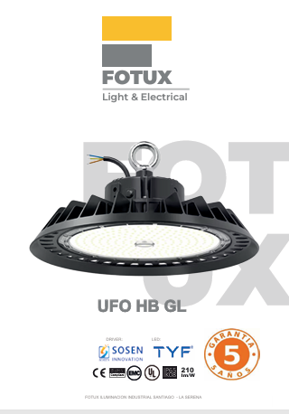
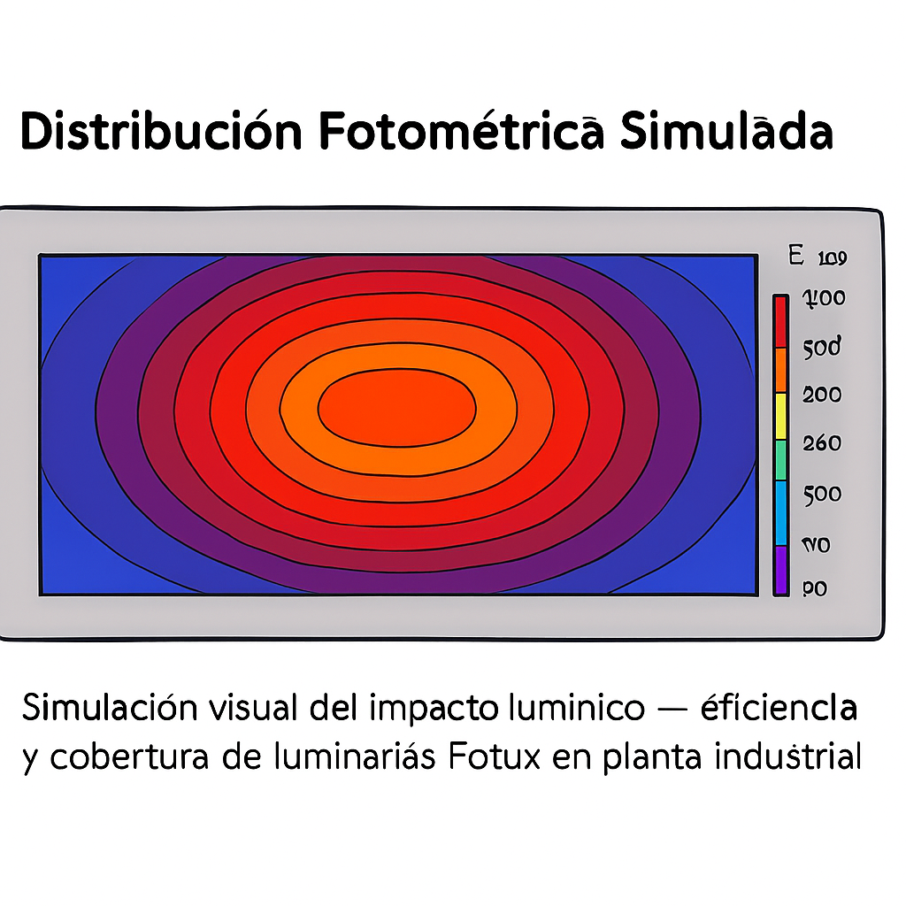

🔦 Proyector LED de Área IP66
Resistente al agua y polvo, óptica profesional, ideal para patios industriales y zonas de carga.

Alta eficiencia, bajo mantenimiento, retorno rápido de inversión.
Demostramos con datos reales cómo nuestras luminarias superan a la competencia.
Resistente al agua y polvo, óptica profesional, ideal para patios industriales y zonas de carga.
Cumple norma DS1 para espacios exteriores, eficiencia superior, ideal para caminos, accesos y obras públicas.